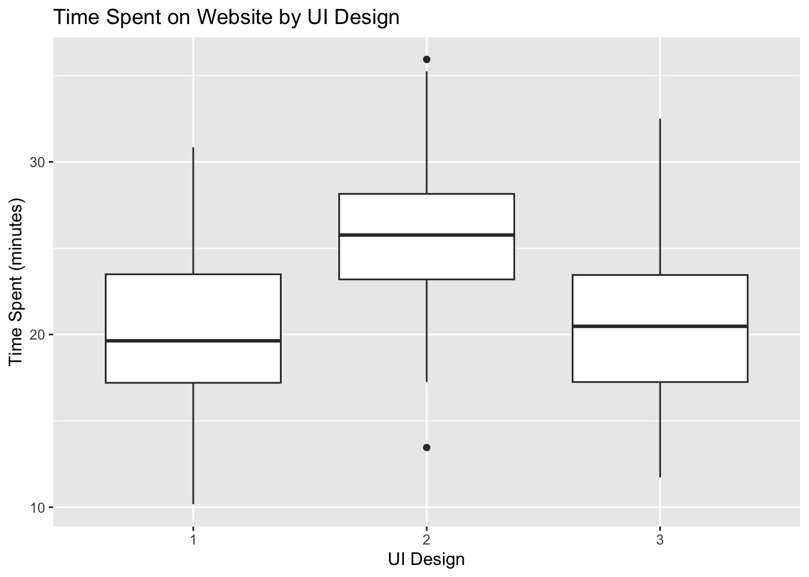
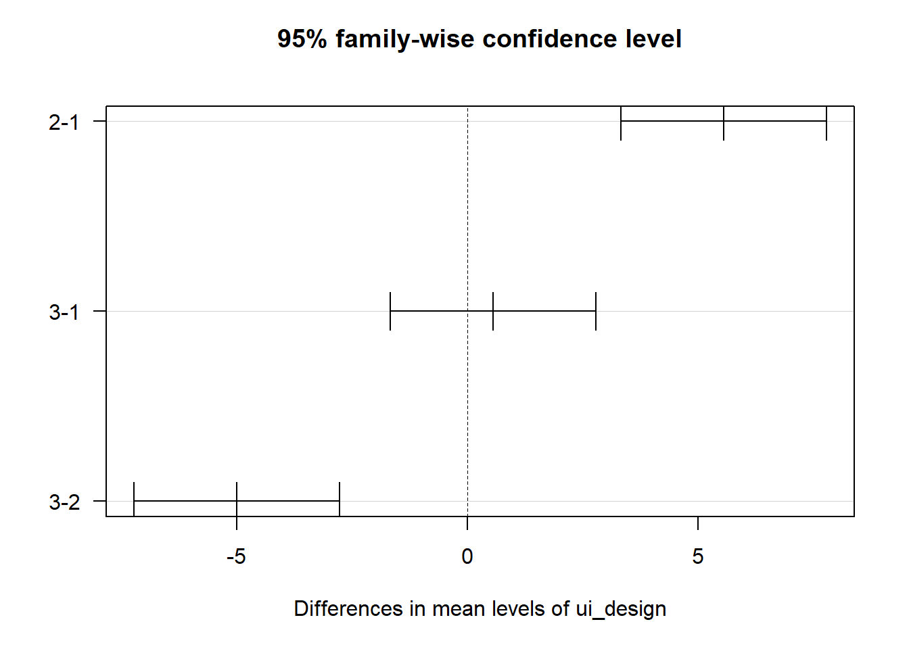
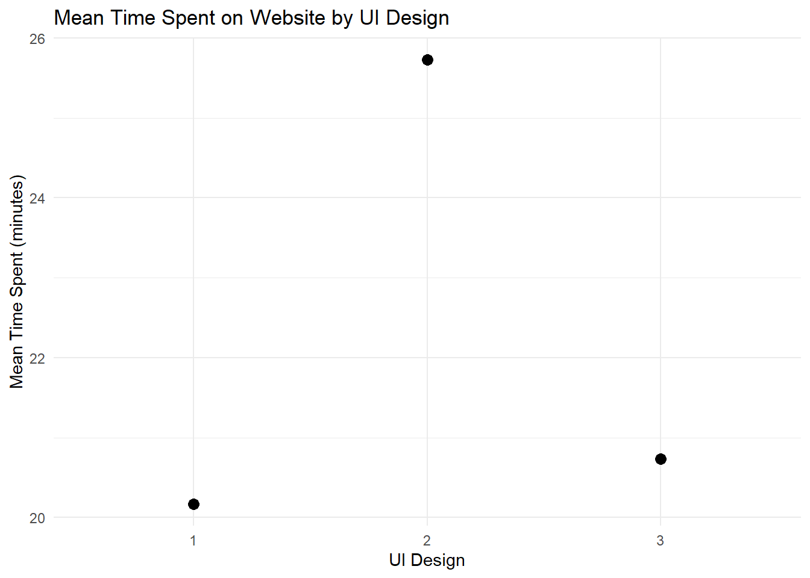

This chapter covers ANOVA (Analysis of Variance), used to compare the means across multiple groups. We will use an example dataset to investigate whether the design of a user interface (UI) affects the time users spend on a website.
3.2 Example Question
Does the design of a user interface (UI) influence the time users spend on a website?
3.3 Required Packages (R)
# Load the necessary packages library(tidyverse) # used for data manipulation and visualization
Warning: package 'ggplot2' was built under R version 4.2.3
── Attaching core tidyverse packages ──────────────────────── tidyverse 2.0.0 ──
✔ dplyr 1.1.1 ✔ readr 2.1.4
✔ forcats 1.0.0 ✔ stringr 1.5.0
✔ ggplot2 3.5.1 ✔ tibble 3.2.1
✔ lubridate 1.9.2 ✔ tidyr 1.3.0
✔ purrr 1.0.1
── Conflicts ────────────────────────────────────────── tidyverse_conflicts() ──
✖ dplyr::filter() masks stats::filter()
✖ dplyr::lag() masks stats::lag()
ℹ Use the conflicted package (<http://conflicted.r-lib.org/>) to force all conflicts to become errors
library(car) # provides tools for ANOVA and regression diagnostics
Loading required package: carData
Attaching package: 'car'
The following object is masked from 'package:dplyr':
recode
The following object is masked from 'package:purrr':
some
# to install any missing packages go to the Terminal and run the command: install.packages("PACKAGE_NAME")
3.4 Simulating the Dataset in R
# Setting a seed for reproducibilityset.seed(123)# Simulating datan_groups <-3# Number of UI designsn_per_group <-50# Number of users per group# Creating a factor variable for UI designui_design <-factor(rep(1:n_groups, each = n_per_group))# Simulating time spent data with different means for each UI designtime_spent <-rnorm(n_groups * n_per_group, mean =rep(c(20, 25, 22), each = n_per_group), sd =5)# Creating a data framedata <-data.frame(ui_design, time_spent)# Viewing the first few rows of the datasethead(data)
* Set seedfor reproducibilitysetseed 123* Simulate datasetobs 150gen ui_design = ceil(_n/50)gen time_spent = rnormal(20 + (ui_design==2)*5 + (ui_design==3)*2, 5)* View the first few rowslistin 1/10
3.6 Visualizing the Descriptives in R
# Plotting the distribution of time spent across different UI designsggplot(data, aes(x = ui_design, y = time_spent)) +geom_boxplot() +labs(title ="Time Spent on Website by UI Design",x ="UI Design",y ="Time Spent (minutes)")

3.7 Visualizing the Descriptives in Stata
* Box plot of time spent by UI designgraph box time_spent, over(ui_design) title("Time Spent on Website by UI Design") ///ytitle("Time Spent (minutes)") xtitle("UI Design")
3.8 Running the ANOVA in R
# Performing ANOVAanova_model <-aov(time_spent ~ ui_design, data = data)# Viewing the summary of the ANOVA modelsummary(anova_model)
Df Sum Sq Mean Sq F value Pr(>F)
ui_design 2 937 468.7 21.18 8.29e-09 ***
Residuals 147 3253 22.1
---
Signif. codes: 0 '***' 0.001 '**' 0.01 '*' 0.05 '.' 0.1 ' ' 1
3.9 Running the ANOVA in Stata
* Perform ANOVAanova time_spent ui_design
3.10 Interpreting the Output
3.10.1 In R
The ANOVA table provides the following key pieces of information: - Df: Degrees of freedom associated with the sources of variance. - Sum Sq: Sum of squares, which measures the total variation for each source. - Mean Sq: Mean square, calculated as Sum Sq divided by Df. - F value: The F-statistic, calculated as the ratio of mean square values. - Pr(>F): The p-value associated with the F-statistic.
3.10.2 In Stata
The output of the ANOVA in Stata provides similar information: - Source: Lists the sources of variance. - Partial SS: Partial sum of squares for each source. - df: Degrees of freedom associated with each source. - MS: Mean square for each source, calculated as SS/df. - F: The F-statistic for each source. - Prob > F: The p-value associated with the F-statistic.
If the p-value is less than the significance level (typically 0.05), we reject the null hypothesis that all group means are equal.
3.11 Post-hoc Testing in R
# Performing Tukey's Honest Significant Difference testtukey_test <-TukeyHSD(anova_model)# Viewing the Tukey test resultstukey_test
Tukey multiple comparisons of means
95% family-wise confidence level
Fit: aov(formula = time_spent ~ ui_design, data = data)
$ui_design
diff lwr upr p adj
2-1 5.5600236 3.332272 7.787775 0.0000001
3-1 0.5584801 -1.669271 2.786231 0.8237890
3-2 -5.0015435 -7.229295 -2.773792 0.0000012
# Plotting the results of the Tukey HSD testplot(tukey_test, las =1)

# Creating a plot to visualize group means with confidence intervalsggplot(data, aes(x = ui_design, y = time_spent)) +stat_summary(fun.data = mean_cl_normal, geom ="errorbar", width =0.2) +stat_summary(fun = mean, geom ="point", size =3) +labs(title ="Mean Time Spent on Website by UI Design",x ="UI Design",y ="Mean Time Spent (minutes)") +theme_minimal()

3.14 Plotting the Results in Stata
* Plot groupmeans with confidence intervalsmeans time_spent, over(ui_design) ci
3.15 Assumptions
Independence: Observations should be independent of each other.
Normality: The residuals of the model should be normally distributed.
Homoscedasticity: Variances across the groups should be equal.
Random Sampling: The data should be randomly sampled from the population.
These assumptions should be checked to ensure the validity of the ANOVA results.
3.16 Syntax Comparison: R vs Stata
This table summarizes the main differences between R and Stata in terms of syntax for performing ANOVA analyses.